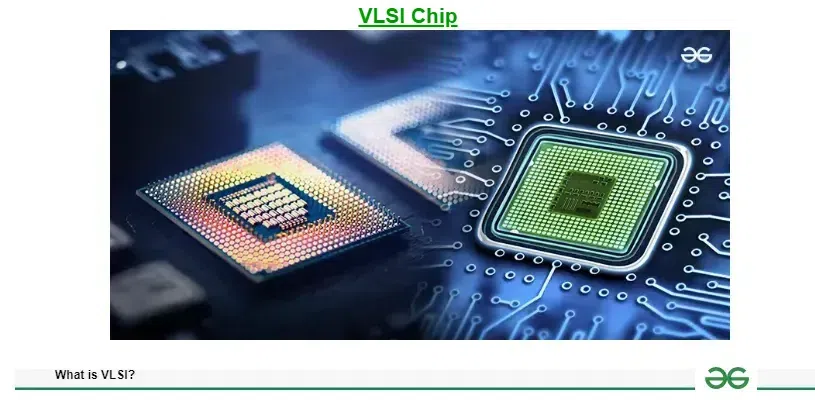
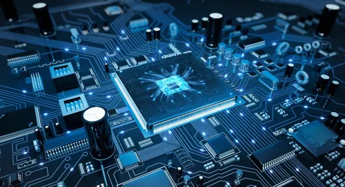

About Conference
Theme: Advancing Innovation in Nano-scale Semiconductor Devices, low power VLSI systems, and intelligent vision algorithms.
The International Conference on Nanoelectronics, VLSI, and Image Processing (ICNVIP-2027) aims to provide a premier global platform for researchers, academicians, industry professionals, and innovators to present and exchange groundbreaking ideas, original research, and technological advancements across interdisciplinary domains of modern electronics and intelligent computing.
The scope of the conference encompasses a broad range of cutting-edge topics organized across three core technical areas. In the domain of Nanotechnology and Nanoelectronics, the conference covers nanomaterials for electronic applications, advanced fabrication and characterization techniques, quantum technologies, optoelectronics, and wearable and flexible electronic devices. In the area of VLSI Design and Embedded Systems, it addresses low-power and high-performance circuit design, FPGA and SoC technologies, AI hardware accelerators, and neuromorphic computing architectures. In the field of Signal Processing and Image Processing, the conference explores computer vision, machine learning in imaging systems, biomedical imaging, and intelligent signal analysis.
By bringing together diverse perspectives from academia and industry, the conference seeks to foster meaningful collaboration, inspire high-quality research contributions, and accelerate innovation in next-generation electronic and computational technologies. It serves as a dedicated forum for addressing current challenges and unlocking future opportunities at the intersection of nanoelectronics, intelligent systems, and advanced imaging technologies.



Scope of Conference
Technical TopicsThe conference welcomes original research contributions, review articles, and innovative case studies spanning a wide range of interdisciplinary topics organized across three core technical tracks:
1. Nanoelectronics and Nano Devices
This track focuses on the science and engineering of nanoscale materials and devices that are transforming modern electronics.
- Nanomaterials for Electronic Applications
- Nanomaterial Fabrication Techniques & Characterization
- Wearable and Flexible Nanoelectronic Devices
- Quantum & Emerging Technologies
- Optoelectronics & Photonic Devices
2. VLSI Design and Embedded Systems
This track addresses the design, optimization, and implementation of integrated circuits and embedded platforms for next-generation computing.
- Low Power and High Performance Circuits
- Analog, Digital & Mixed Signal Design
- FPGA, ASIC & System-on-Chip (SoC)
3. Signal Processing & Image Processing
This track explores advanced computational and AI-driven methods for signal analysis, visual perception, and intelligent imaging systems.
- Computer Vision & Pattern Recognition
- Machine Learning in Imaging Systems
- Biomedical Imaging & Applications
- AI Hardware & Neuromorphic Computing
The conference encourages submissions that bridge theoretical foundations with practical applications, promoting knowledge exchange and collaboration across academia and industry in the pursuit of next-generation electronic and intelligent computing technologies.